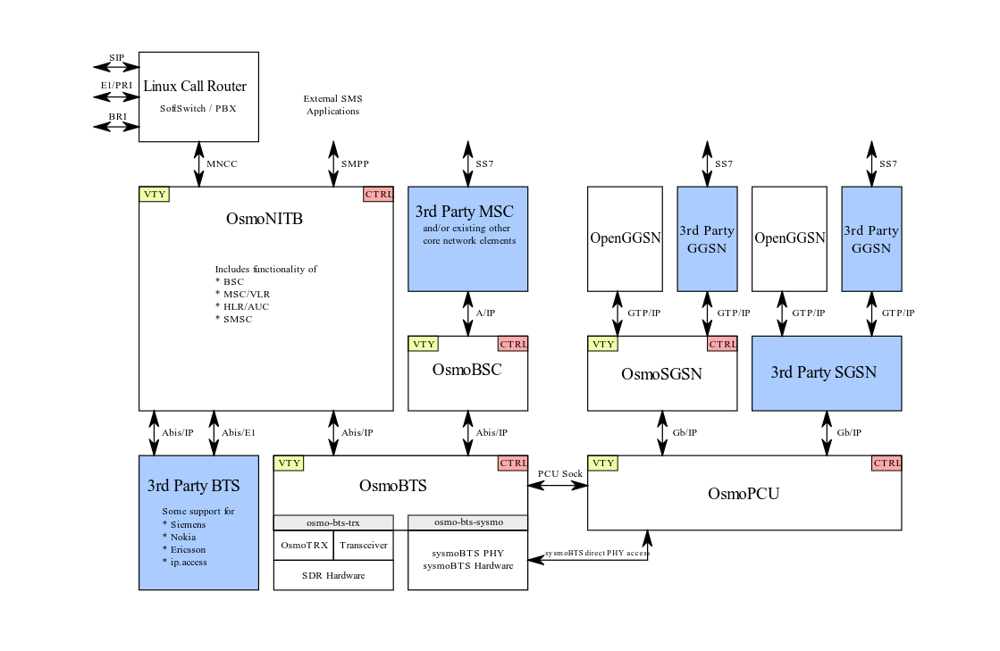

Homebrewing a basic circuit-switched GSM (2G) base station!
Have you ever set up your own web server? Used a Linux distro and played around with iptables, nginx, or netfilter? If you've done anything like that, you've experienced the power of open standards, open-source software, and hackable infrastructure.
Now imagine trying to do the same — but with a cellular network.
Until around 2009, if you wanted to build even the most basic GSM network, your only option was to approach telecom giants like Ericsson, Huawei, or Nokia, pitch yourself as a serious customer, and drop a six-digit sum — only to receive black-box equipment you couldn’t study, modify, or improve.
Why no FOSS for cellular?
Despite GSM specs being publicly available since the '90s — just like TCP/IP — there were no Free and Open Source (FOSS) implementations of cellular protocol stacks for nearly 20 years. Meanwhile, the Internet world thrived with open TCP/IP stacks and accessible development tools.
This gap wasn’t just technical — it was cultural:
- Telecom Industry vs. Hacker mindset
- Circuit-switched legacy vs. packet-switched openness
- ITU-T bureaucracy vs. Internet community-driven development
Enter Osmocom
In 2008, a group of hackers set out to change that. They started building FOSS GSM implementations — from raw radio interfaces (bs11-abis) to the BSC layer (bsc_hack) to full mobile core software (OpenBSC) and beyond.
This movement became Osmocom — an umbrella project uniting many components needed to run your own GSM network with full control and full source code.
In this post, I’ll share how I set up a GSM (2G) base station using a LimeSDR, Osmocom software, and a Linux-based single board computer. No black boxes. No NDAs. Just open software, open specs, and a curious mind.
This is a prototype I worked on trust me, it's a fully working 2G GSM base station. One can connect a phone to it, place calls, and send SMS - Just like a real cell tower.
It’s a proof that one can homebrew a functional 2G cell tower — no six-digit budget or vendor black boxes required.
Connecting my phone to the above built GSM (2G) base station!

Osmocom, short for Open Source Mobile Communications, is a collection of open-source software projects that implement various components of mobile telecommunication networks. The core goal of Osmocom is to provide a free, open-source framework to develop, experiment with, and deploy mobile networks, particularly GSM (2G) but also extending to UMTS (3G), LTE (4G), and beyond.
This article explores Osmocom's GSM stack, its key components, and how to use them to set up a software-based GSM network. The flexibility of this stack, along with compatible hardware such as LimeSDR or USRP, makes it possible for researchers, engineers, and hobbyists to create their own fully operational 2G mobile networks.
Overview of GSM Technology
Global System for Mobile Communications (GSM) is a standard developed for second-generation (2G) cellular networks. Despite the global shift towards 4G and 5G networks, GSM remains widely used, especially in rural or less developed areas. GSM provides voice, SMS, and limited data services through technologies like GPRS and EDGE.
Key Concepts in GSM
- BSC (Base Station Controller): Manages multiple BTS (Base Transceiver Stations) and oversees resource allocation, call setup, and handover between BTS units.
- MSC (Mobile Switching Center): Acts as the central node that handles call switching, SMS routing, and interfacing with external networks like the PSTN (Public Switched Telephone Network).
- HLR (Home Location Register): A database that stores permanent subscriber information, such as phone numbers (MSISDN), SIM details (IMSI), and authentication keys.
- GPRS/EDGE: Provides packet-switched data services over a GSM network, albeit at much lower speeds than modern mobile networks.
Osmocom GSM Architecture

The Osmocom GSM software suite is divided into multiple components that replicate the traditional architecture of a 2G GSM network. These components can be run on commodity hardware and work with Software Defined Radios (SDRs) to transmit and receive GSM signals.
Core Components of Osmocom GSM

-
OsmoBSC (Base Station Controller)
- Manages BTS units and coordinates call setup, handover, and resource management. It interfaces with the MSC to connect calls and sessions with external networks.
-
OsmoMSC (Mobile Switching Center)
- Responsible for call routing and switching within the network. Handles SMS delivery and interacts with the HLR for subscriber authentication.
-
OsmoHLR (Home Location Register)
- A database used for storing subscriber information, such as IMSI, MSISDN, and authentication keys (Ki). Essential for subscriber registration and authentication within the GSM network.
-
OsmoTRX (Transceiver)
- Implements a GSM transceiver that works with SDRs like LimeSDR or USRP. Interfaces with OsmoBTS to handle low-level GSM radio operations, including encoding and modulation.
-
OsmoBTS (Base Transceiver Station)
- Controls the radio interface between mobile devices and the network. Works with OsmoTRX to send and receive signals over the air.
-
OsmoPCU (Packet Control Unit)
- Handles data services (GPRS/EDGE) within the network. Connects to the SGSN for managing data connections in a packet-switched domain.
-
OsmoSGSN (Serving GPRS Support Node)
- Manages the data sessions and mobility of users in the packet-switched domain. Interacts with OsmoGGSN to provide internet access to users.
-
OsmoGGSN (Gateway GPRS Support Node)
- Provides a gateway for GPRS/EDGE services, routing data packets between the GSM network and external IP networks.
-
OsmoSTP (Signal Transfer Point)
- Provides routing for SS7 signaling messages used in traditional telecom networks. Essential for call control and interconnection between different network elements.
-
OsmoMGW (Media Gateway)
- Handles voice call audio routing between BTS, MSC, and external networks. Supports transcoding between different audio formats, ensuring compatibility between different network segments.
Setup
We need the following to complete the setup:
- A Linux machine (Debian 12 is recommended)
- A LimeSDR Mini device (connected via USB)
- Optional: Programmable SIM cards for custom authentication

Clone the repository
This repository contains the configuration files and scripts needed to set up the GSM network. Clone it using Git.
git clone https://github.com/krvprashanth/GSM-LimeSDR-Osmocom.git
Installing Required Packages and Verifying LimeSDR Connectivity
Before we proceed with the actual setup, the first step is to install the necessary packages and ensure that your LimeSDR hardware is connected and working properly.
scripts/install_osmocom_limesdr.sh
This script automates the installation of all the necessary packages and tools for LimeSDR and Osmocom.
scripts/hardware_test_limesdr.sh
This script checks the connectivity and functionality of the LimeSDR device once it is physically connected to the system.
It performs the following tasks: Runs LimeUtil --update to update the LimeSDR firmware and executes LimeQuickTest to verify that the LimeSDR hardware is functioning properly.
pi@limesdr:~/GSM-LimeSDR-Osmocom/scripts$ sudo ./hardware_test_limesdr.sh Updating LimeSDR... Connected to [LimeSDR-USB [USB 2.0] 9070602432E16] Existing firmware is same as update (4) Existing gateware is same as update (2.23) Firmware and Gateware update is not required. Programming update complete! LimeSDR updated successfully. Running LimeQuickTest to check if the LimeSDR is working properly... [ TESTING STARTED ] ->Start time: Sat Oct 19 18:53:46 2024 ->LimeSuite version: 23.11.0-23.11.0 ->Device: LimeSDR-USB, media=USB 2.0, module=FX3, addr=1d50:6108, serial=0009070602432E16, HW=4, GW=2.23 Warning: USB3 not available Serial Number: 0009070602432E16 Chip temperature: 30 C [ Clock Network Test ] ->FX3 GPIF clock test Test results: 38802; 42558; 46314 - PASSED ->Si5351C test CLK0: 17554 / 17554 - PASSED CLK1: 17554 / 17554 - PASSED CLK2: 17554 / 17554 - PASSED CLK3: 17554 / 17554 - PASSED CLK4: 17554 / 17554 - PASSED CLK5: 17554 / 17554 - PASSED CLK6: 17554 / 17554 - PASSED ->ADF4002 Test Result: 10 - PASSED ->VCTCXO test Results : 5112943 (min); 5113075 (max) - PASSED ->Clock Network Test PASSED [ FPGA EEPROM Test ] ->Read EEPROM ->Read data: 12 03 02 12 03 02 02 ->FPGA EEPROM Test PASSED [ LMS7002M Test ] ->Perform Registers Test ->External Reset line test Reg 0x20: Write value 0xFFFD, Read value 0xFFFD Reg 0x20: value after reset 0x0FFFF ->LMS7002M Test PASSED [ RF Loopback Test ] Note: The test should be run without anything connected to RF ports ->Configure LMS ->Run Tests (TX_2-> LNA_L): CH0 (SXR=800.0MHz, SXT=805.0MHz): Result:(-14.4 dBFS, 5.00 MHz) - PASSED CH1 (SXR=800.0MHz, SXT=805.0MHz): Result:(-16.1 dBFS, 5.00 MHz) - PASSED ->Run Tests (TX_1 -> LNA_W): CH0 (SXR=1800.0MHz, SXT=1805.0MHz): Result:(-17.2 dBFS, 5.00 MHz) - PASSED CH1 (SXR=1800.0MHz, SXT=1805.0MHz): Result:(-17.3 dBFS, 5.00 MHz) - PASSED ->Run Tests (TX_2-> LNA_H): CH0 (SXR=2500.0MHz, SXT=2505.0MHz): Result:(-17.2 dBFS, 5.00 MHz) - PASSED CH1 (SXR=2500.0MHz, SXT=2505.0MHz): Result:(-15.1 dBFS, 5.00 MHz) - PASSED ->RF Loopback Test PASSED => Board tests PASSED <= Elapsed time: 2.32 seconds LimeQuickTest completed successfully. Your LimeSDR is working properly.
LimeSDR Test and Osmocom Services
The output shows that the LimeSDR has been successfully tested and is working properly. Additionally, it indicates that the Osmocom services were started successfully. Here’s a breakdown of what’s happening and how we can interpret the output:
1. LimeSDR Firmware Update
- LimeUtil --update: The script attempted to update the LimeSDR firmware, but it was already up to date (both the firmware and gateware are the latest).
- Update Complete: The script confirms that no update was required, and the LimeSDR firmware is up to date.
2. LimeQuickTest Results
- Clock Network Test: The test on various clocks (FX3 GPIF, Si5351C, ADF4002, etc.) passed successfully, confirming that the clock system is operating correctly.
- FPGA EEPROM Test: The FPGA EEPROM test passed, meaning that the EEPROM data is correctly read.
- LMS7002M Test: The test for the LMS7002M chip, which is the core of the LimeSDR, also passed.
- RF Loopback Test: The RF loopback tests for different channels (TX_2 -> LNA_L, TX_1 -> LNA_W, etc.) all passed successfully, confirming that the radio hardware is functioning properly.
- Conclusion: The LimeSDR is confirmed to be in working condition, with no errors found during the tests.
3. Starting Osmocom Services
- The Osmocom services are being managed using
systemctl. The commandsudo ./control_osmocom_services.sh startstarts multiple Osmocom services likeosmo-hlr,osmo-msc,osmo-mgw, etc. - These services are essential for managing the GSM network stack and will allow the GSM network to function, supporting functionalities like call routing, SMS, and packet-switched data services.
Next Steps
After successfully running the LimeSDR test and starting the Osmocom services, you should now be able to:
-
Verify the GSM Network: Check if the Osmocom services are running properly by using
systemctl statusorps auxto ensure that the services likeosmo-hlr,osmo-msc, etc., are active. -
Test GSM Functionality: You can now test various GSM functionalities such as making calls or sending SMS messages, assuming you have set up the proper configuration (like subscriber information, MSISDN, etc.).
-
Monitor the Services: Use logs or monitoring tools to check the performance and health of the running Osmocom services and the LimeSDR.
If any issues arise, it may be helpful to check the logs for more detailed error messages, or to recheck the hardware connections of the LimeSDR.
Customizing Configuration Files
Navigate to the rootfs/etc/osmocom folder within the cloned repository. These files need to be updated based on your specific network settings.
Setting MCC and MNC
In osmo-bsc.cfg and osmo-msc.cfg, configure the Mobile Country Code (MCC) and Mobile Network Code (MNC). For example:
network country code 724 mobile network code 64 short name ComSec long name ComSec 2G Network authentication optional encryption a5 0
You can customize these codes based on your country's MCC and select an unused MNC. Adjust the authentication line based on whether you want to enforce authentication (change optional to required if needed).
IP and DNS Settings
In osmo-ggsn.cfg, set up DNS and IP address ranges for network subscribers:
ip dns 0 8.8.8.8 ip dns 1 8.8.4.4 ip prefix dynamic 172.16.32.0/24
USSD Services
In osmo-hlr.cfg, you can define USSD services for users to query their IMSI or MSISDN:
ussd route prefix *#100# internal own-msisdn ussd route prefix *#101# internal own-imsi subscriber-create-on-demand cs+ps
After modifying the necessary configuration files, copy all the configuration files to the /etc/osmocom directory on your system. A script for doing so is provided under scripts/copy_osmocom_configs.sh for convenience.
Start the Osmocom services
Use the scripts/control_osmocom_services.sh convenience script to start all the required Osmocom services (i.e. by running scripts/control_osmocom_services.sh start). It is likely that the services had already been started automatically when you installed them, so it is recommended to completely stop them by running scripts/control_osmocom_services.sh stop (and, possibly, scripts/control_osmocom_services.sh kill, if needed) before starting them again.
pi@limesdr:~/GSM-LimeSDR-Osmocom/scripts$ sudo ./control_osmocom_services.sh start + systemctl start osmo-hlr osmo-msc osmo-mgw osmo-stp osmo-bsc osmo-ggsn osmo-sgsn osmo-bts-trx osmo-trx-lms osmo-pcu osmo-cbc
Connecting Devices to the Network
Custom SIM Cards
If your network requires authentication, insert your programmed SIM card into a mobile device, and it should connect automatically.
Open Network
For open networks, devices must manually select your network by disabling automatic network selection. The network may appear with a numerical name, composed of the MCC and MNC (e.g., "72464").
Network Usage
For Networks with Authentication
Insert your programmed SIM card into a device, and it will automatically connect.
For Open Networks
To manually connect:
- Go to Settings > Network & Internet > Mobile Network.
- Disable Automatically select network.
- Select your GSM network from the list, which may appear as a numerical combination of the MCC and MNC (e.g., “72464”).
Calls and SMS
Once a device is connected to the GSM network, calls and SMS should function automatically. To identify the phone numbers to call or send SMS to, you need to look up each subscriber's MSISDN.
You can obtain this information in two ways:
- From the host system:
-
Query the OsmoHLR VTY to get the MSISDN of the subscribers.
-
Using USSD on a mobile device:
- Dial
*#100#on the mobile phone to find out the assigned number directly on the device.
Once the MSISDN is identified, you can make calls and send SMS as usual within the network.
Managing subscribers
Manage subscribers via the OsmoHLR's VTY interface. By default, OsmoHLR binds its VTY to TCP port 4258. To connect, use telnet, as follows.
sudo telnet 127.0.0.1 4258
Upon successful connection, it will be presented with the OsmoHLR command prompt. To begin with, enter the enable mode.
OsmoHLR> enable
For networks that require authentication, add subscribers manually by specifying IMSI and Ki values. To create a subscriber, refer to the following example, and replace the placeholder IMSI 724640000000000 with the actual IMSI of the SIM card you are registering.
OsmoHLR# subscriber imsi 724640000000000 create % Created subscriber 724640000000000 ID: 3 IMSI: 724640000000000 MSISDN: none
Now, assign a MSISDN to subscriber. In this case, we'll be using 12345678. Remember, this is a placeholder and should be replaced with the actual phone number we wish to assign.
OsmoHLR# subscriber imsi 724640000000000 update msisdn 12345678 % Updated subscriber IMSI='724640000000000' to MSISDN='12345678'
Next, specify the authentication parameters. In this example using comp128v1 as the AUC algorithm, but depending on our SIM card settings, comp128v3 may be required. The Ki (authentication key) provided here is a placeholder and must be replaced with the actual Ki of our SIM card.
OsmoHLR# subscriber imsi 724640000000000 update aud2g comp128v1 ki 00000000000000000000000000000000
Specify the network access mode (e.g., cs+ps for both circuit-switched and packet-switched access).
OsmoHLR# subscriber imsi 724640000000000 update network-access-mode cs+ps
To view the updated information for a subscriber, use the show command.
OsmoHLR# subscriber imsi 724640000000000 show ID: 1 IMSI: 724640000000000 MSISDN: 12345678 2G auth: COMP128v1 KI=00000000000000000000000000000000
Extending Beyond GSM: UMTS and LTE
Osmocom also offers support for 3G and LTE technologies. Projects like srsRAN enable LTE setups using similar principles, offering higher data rates and better security. While this guide focuses on GSM, transitioning to UMTS or LTE with Osmocom and SDR hardware is a logical next step for those interested in more advanced mobile networks.
Conclusion
Osmocom’s GSM suite provides an invaluable platform for anyone interested in building, experimenting with, or understanding GSM networks. The modular design allows for flexible configurations, whether for testing voice calls, SMS, or data services. However, GSM’s inherent security vulnerabilities and strict legal requirements should always be considered when deploying even small-scale networks.
By combining Osmocom software with affordable SDR hardware, you can unlock deep insights into how mobile communication networks function, while also exploring real-world applications in education, research, and experimentation.
Further Reading
The Osmocom project provides comprehensive documentation for each of its components. To further explore and deepen your understanding, the following resources are highly recommended: